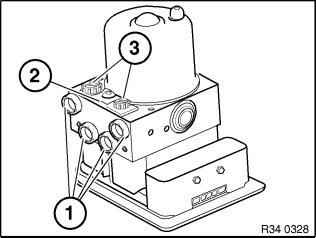
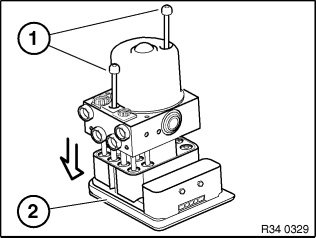

34 52 516 Removing and Installing/Replacing DSC Control Unit
34 52 516 Removing and installing/replacing DSC control unitImportant!
Read and comply with notes on protection against electrostatic discharge (ESD protection).
Necessary preliminary tasks:
^ Remove hydraulic unit.
Important!
Removing pump motor from valve block is not permitted!
Do not twist pump motor.

Important!
Secure provided retaining lugs (2) from repair kit for control unit with aid of plugs (3).
Close off pipe connections with plugs (1).

Important!
Control unit must not come into contact with dirt or moisture.
Contacts must not be bent!
Release screws (1) and carefully remove control unit (2).
Installation:
Tightening torque 34 51 1AZ.
Replacement:
- Carry out programming/encoding
- Adjustment of steering angle sensor
- Brake line interchange check: